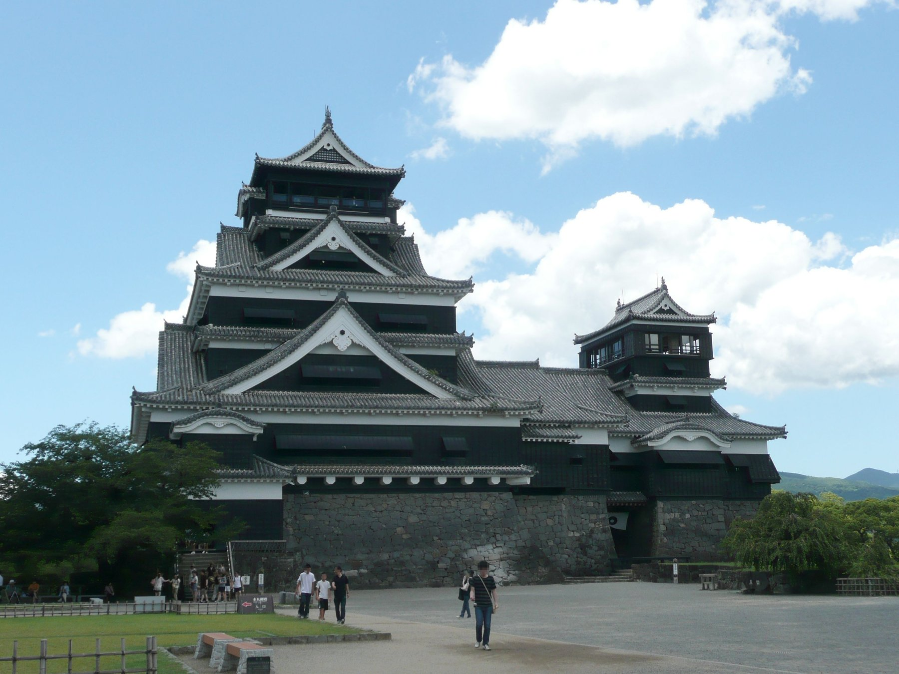
Stone walls built to repel any army have outlasted cannon fire and two
earthquakes a decade apart.
Kiyomasa built it, fire burned it, the ground shook it — twice — and still the
walls stand.
A guide to the one castle in Japan where the repair work itself is part of the visit.
Admission fees, opening hours and public access at Kumamoto Castle are subject to change,
and are unusually unsettled since the July 2026 earthquake. Always check the official
website for the latest information before visiting.
Kumamoto Castle official site: https://castle.kumamoto-guide.jp/
| Name | Kumamoto Castle (Kumamoto-jo) — also known as Ginnan-jo, the Ginkgo Castle |
|---|---|
| Location | 1-1 Honmaru, Chuo-ku, Kumamoto City, Kumamoto Prefecture |
| Type | Castle. National Historic Site, designated 1933 |
| Important Cultural Properties | Uto Turret and 12 other turrets/gates (13 buildings), designated 1933 |
| The keep | Main keep: six roofs, six floors over a basement. Secondary keep: four roofs, four floors over a basement. Rebuilt 1960 in reinforced concrete |
| Founded | 1601 to around 1607, under Kato Kiyomasa |
| Present status | Damaged 2016; keep repairs completed 2021. Struck again by the Reiwa 8 Kumamoto Earthquake (M7.1) on 28 July 2026; reopened 13 August 2026 |
| Official site | https://castle.kumamoto-guide.jp/ |
Kato Kiyomasa distinguished himself at Sekigahara and came away with the whole of Higo province. Before that, as one of Toyotomi Hideyoshi’s trusted generals, he had fought in the invasions of Korea and endured the siege of Ulsan Castle — weeks of holding a fortress with no water and no food left. That experience, more than any other, decided what kind of castle he would build when he finally had one of his own.
Kiyomasa began work on the hill of Chausuyama in 1601 and had the castle substantially complete by around 1607. He was not building for looks. He was building a castle that would never again be starved into surrender — a fortress prepared, in earnest, for a siege that might last indefinitely. More than 120 wells were dug across the grounds, and tradition holds that even the building materials were chosen with hunger in mind: dried gourd strips woven into the tatami facing, taro stems packed into the wall cores — a castle you could, if it came to that, eat your way through.
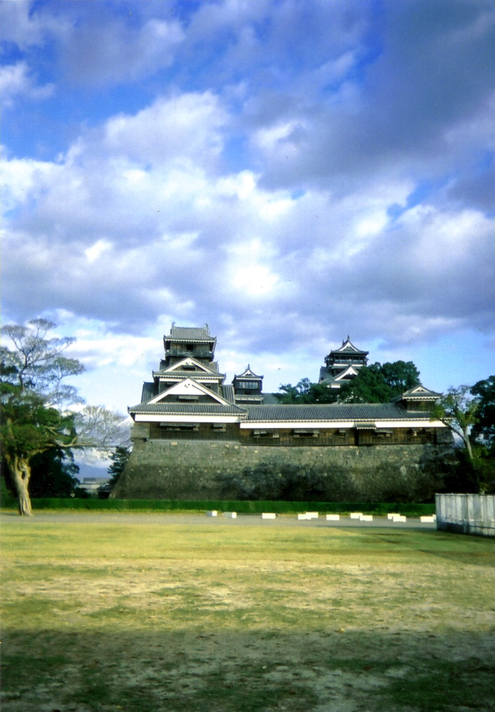
Kumamoto’s signature feature is its stonework, known as musha-gaeshi — “the wall that turns soldiers back.” The base rises at a gentle slope that looks climbable enough, but the curve steepens sharply toward the top, until the uppermost stretch runs almost sheer — a profile said to defeat even a ninja. Also known as the “fan-shaped slope,” it is decoration and defence solved in a single curve, and the fullest expression of Kiyomasa’s practical mind. Chapter 2 looks at how the shape actually works.
In 1632 the Kato family lost the domain, and Hosokawa Tadatoshi took possession of the castle in their place. For roughly 240 years, until the Meiji Restoration, the Hosokawa governed Higo from Kumamoto — inheriting Kiyomasa’s castle, and his uncompromising idea of what a castle was for, more or less intact.
In 1877, government forces found themselves besieged inside Kumamoto Castle by the rebel army of Saigo Takamori in the Satsuma Rebellion. The siege held for roughly fifty days of hard fighting.
Just before the fighting began, the keep and the main buildings of the inner bailey burned to the ground. The cause has never been settled — deliberate arson by the government garrison, to deny the rebels cover, is one account; an accidental fire is another. What is certain is that the castle itself held: the rebel army never broke in, and the siege became, in effect, a demonstration of exactly how sound Kiyomasa’s stonework was. Saigo himself is said to have remarked afterwards that he had not been beaten by the government — he had been beaten by Kato Kiyomasa.
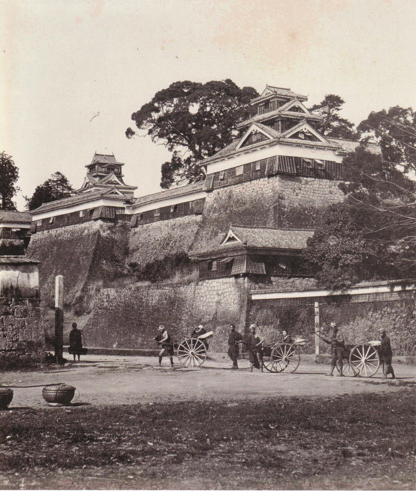
A large ginkgo still stands in front of the keep, traditionally said to have been planted by Kiyomasa himself, along with a saying that ran with it: when the tree grows as tall as the keep, some great calamity will follow. When fire took the keep in 1877, the ginkgo alone survived unburned — and the castle’s other name, Ginnan-jo, the “Ginkgo Castle,” comes directly from that tree.
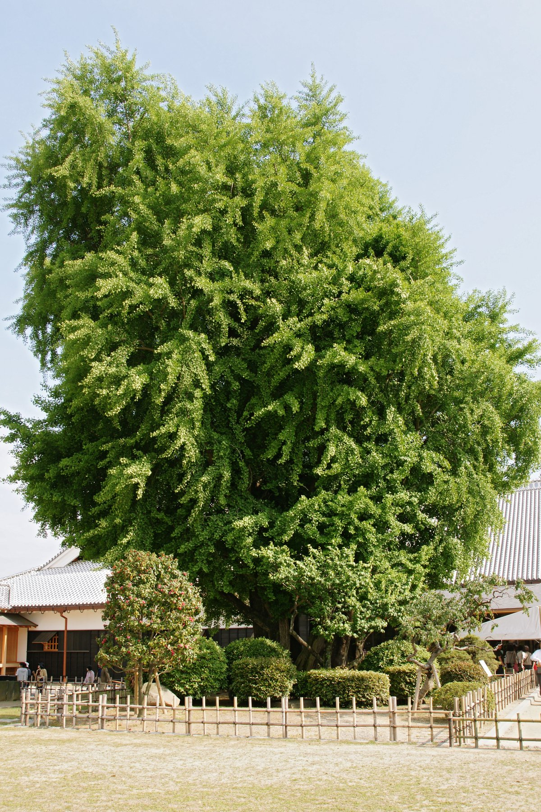
After the war, civic enthusiasm carried the project, and in 1960 the keep was rebuilt in reinforced concrete, closely following Edo-period drawings and early photographs. Eighty-three years after the fire of the Satsuma Rebellion, Kumamoto had its skyline back.
Then, in April 2016, the Kumamoto Earthquake — a foreshock and mainshock striking in close succession — hit the castle directly. Almost every roof tile on the main keep came down. All thirteen of the castle’s Important Cultural Property buildings were damaged, and roughly thirty per cent of the stone walls collapsed. At the Iida-maru Five-Story Turret, a single surviving column of stone held up the entire corner on its own — the so-called “miracle stone pillar,” widely photographed at the time as a symbol of hope for the recovery to come.
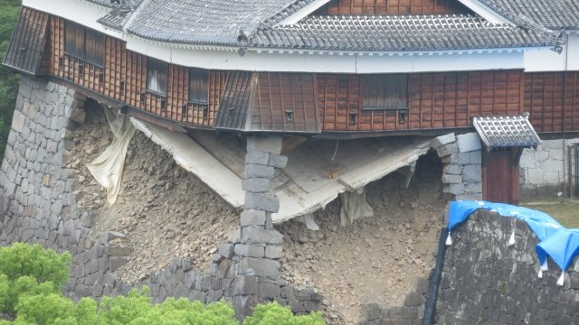
The keep itself was fully repaired by March 2021, with its interior reopened to the public that June. Restoring the whole castle was expected to take far longer — the city’s target for full completion was fiscal year 2052 — and the painstaking work of identifying and resetting each individual stone, one at a time, was still under way a decade later.
The repair work was roughly halfway along when, at 4:27pm on 28 July 2026, an earthquake of magnitude 7.1 and maximum seismic intensity 7 — the Reiwa 8 Kumamoto Earthquake — struck the region again. It had been only ten years since the last one.
A survey by the city found stone walls collapsed or destabilised at roughly thirty separate locations, including sections around both keeps, with interior finishes and roof tiles damaged at several points inside the keep as well. Around the twin keeps and near the Hikone Gate in particular, the damage carried a pointed irony: new collapses appeared right next to sections that had only just been reset after the 2016 quake — a stark reminder of exactly how much weight ten years of careful restoration had been carrying.
The paid areas of the castle were closed immediately after the quake while safety surveys were carried out. In 2016, it had taken roughly five years before the keep could reopen. This time, the castle reopened to the public after only about two weeks, on 13 August 2026 — a result widely credited to the seismic reinforcement carried out during the previous restoration.
Kumamoto Castle is, right now, in an unusually rare position: a castle still mid-repair from one earthquake when a second earthquake struck. The order and method of the first restoration appear to have shaped where the new damage fell, which means the castle is quietly building up something no finished monument can offer — a visible, ongoing record of the craft of recovering from disaster itself, changing a little more with every visit.
The musha-gaeshi stonework introduced in Chapter 1 is not simply a steep incline. Its defining feature is the curve itself — shallow at the base, sharply overhanging by the top. That curve lets the wall spread its own weight while still reaching an intimidating height, and it happens to look magnificent while doing it. Where Himeji Castle’s effect rests on white plaster laid over the whole building, the stonework itself is Kumamoto’s headline feature.
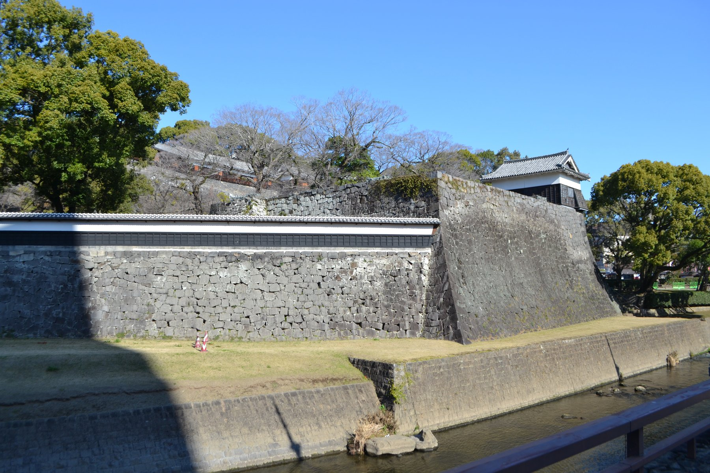
Standing at the northwest corner of the main bailey, the Uto Turret rises three storeys over five levels including its basement — sometimes called “the third keep,” and the largest surviving multi-storey turret in Japan. It escaped the fire of the Satsuma Rebellion and remains the only multi-storey building at Kumamoto that still shows its original Edo-period form. Damaged in the 2016 earthquake, it has been under dismantling and repair since 2022, with completion targeted for 2032. The contrast is the point: the twin keeps are a reconstruction, the Uto Turret is the genuine article — and standing between them is the clearest way to feel how much history this castle is actually carrying.
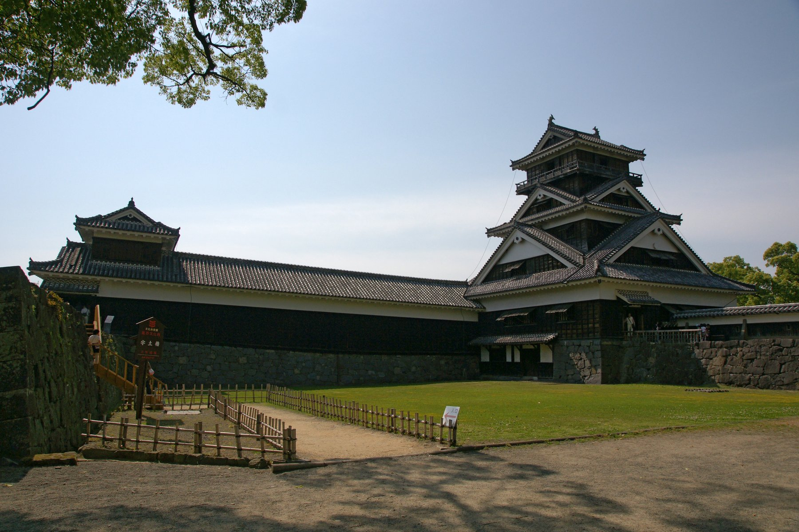
Himeji and Hikone present themselves as finished buildings. Kumamoto, right now, cannot — and that turns out to be one of its most distinctive features. From the special viewing corridor described in Chapter 3, visitors can look directly onto stone walls still awaiting repair, scaffolding wrapped around turrets, and stones mid-way through being reset one at a time. A single castle is showing, simultaneously, the construction techniques of the early Edo period, the damage of a Meiji-era civil war, and the earthquake recovery engineering of the Heisei and Reiwa eras — three centuries of Japanese building craft, stacked on top of one another, on the same afternoon.
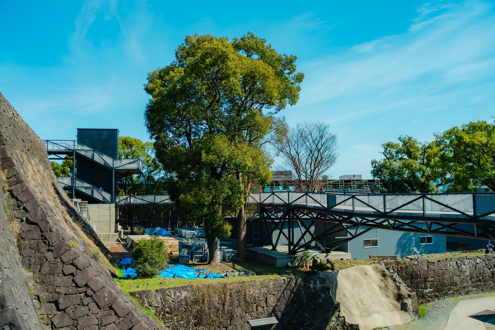
Everywhere else in this series, the architecture chapter describes a building as it stands. Here, it has to describe a building in the middle of becoming itself again — and that, more than any single feature, is what makes a second or third visit to Kumamoto worthwhile: the view from this corridor will not look the same next year.
| Plan | Time | What you see |
|---|---|---|
| Quick | About 1 hour | Viewing corridor plus the keep only |
| Standard | 1.5–2 hours | Keep plus Sakura-no-baba Josaien for a taste of the castle town |
| Unhurried | About 3 hours | All of the above plus Kato Shrine and Ninomaru Plaza, taken slowly |
Which areas are open changes as repair work progresses. Check the official website’s recovery-status map before you visit, and expect it to be different from your last trip. The viewing corridor is an outdoor, elevated structure and may be closed to visitors in rain or high wind.
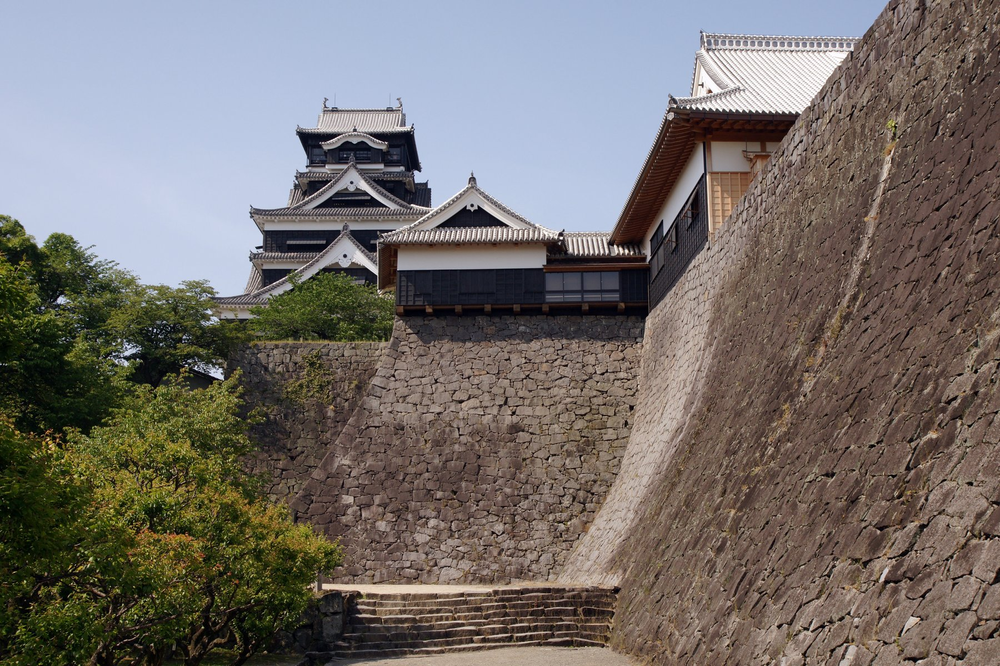
| Open | 9:00–17:00 (last admission 16:00); extended to 9:00–19:00 (last admission 18:00) in July and August |
|---|---|
| Admission | 800 yen for adults and high school students; 300 yen for primary and middle school students |
| Access inside | Reopened 13 August 2026 after the Reiwa 8 earthquake. Which areas are open changes with the repair work — areas near the newest stone collapses are especially likely to carry extra restrictions |
| Official site | https://castle.kumamoto-guide.jp/ |
Fees, hours and open areas all change, more than usual right now. Please check the official website immediately before you travel.
| Nearest station | JR Kumamoto Station |
|---|---|
| By tram | About 17 minutes from Kumamoto Station to the “Kumamotojo/Shiyakusho-mae” stop, then about 7 minutes on foot |
| By bus | The “Shiromegurin” sightseeing loop bus from Kumamoto Station is a convenient alternative |
| By car | Paid car parks nearby, including Ninomaru and Sannomaru car parks |
| Spring | Cherry blossom around Ninomaru Plaza and along the Tsuboi River, set against the keep |
|---|---|
| Summer | Deep green setting off the stonework and the keep; extended opening hours in July and August |
| Autumn | Gold leaf on the ginkgo the castle takes its other name from; the texture of the stonework stands out |
| Winter | Clear air sharpens the curve of the fan-shaped stonework |
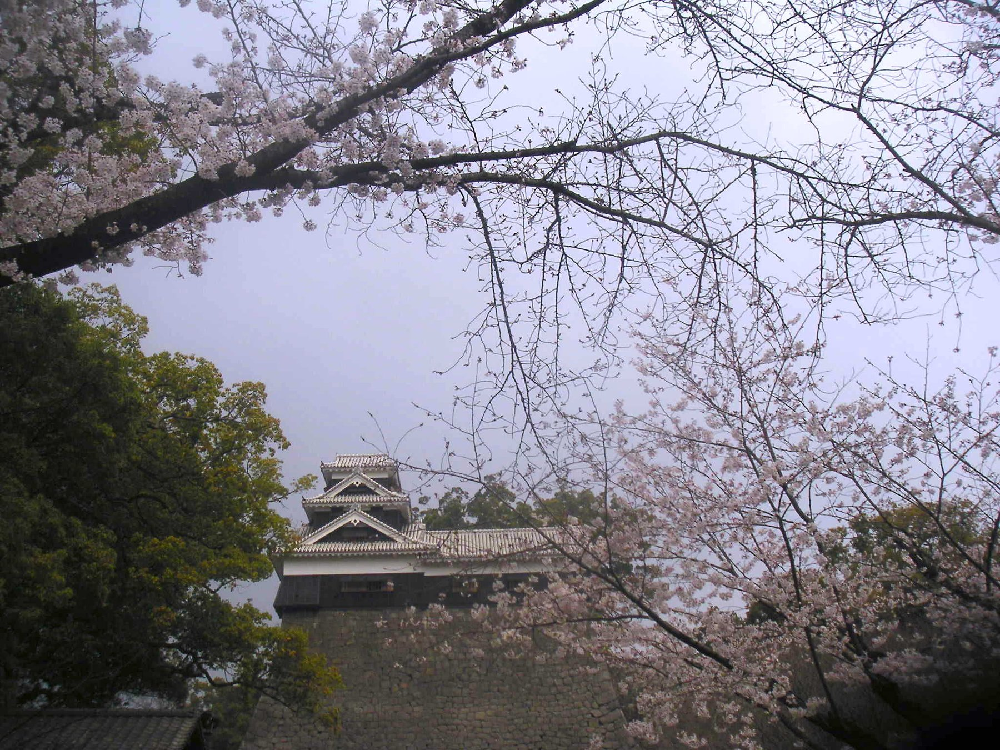
Dedicated to Kato Kiyomasa, Kato Shrine stands within the castle grounds and gives the single best head-on photograph of the keep anywhere on site. It is a working shrine as much as a viewpoint — worth the short climb even setting the camera aside.
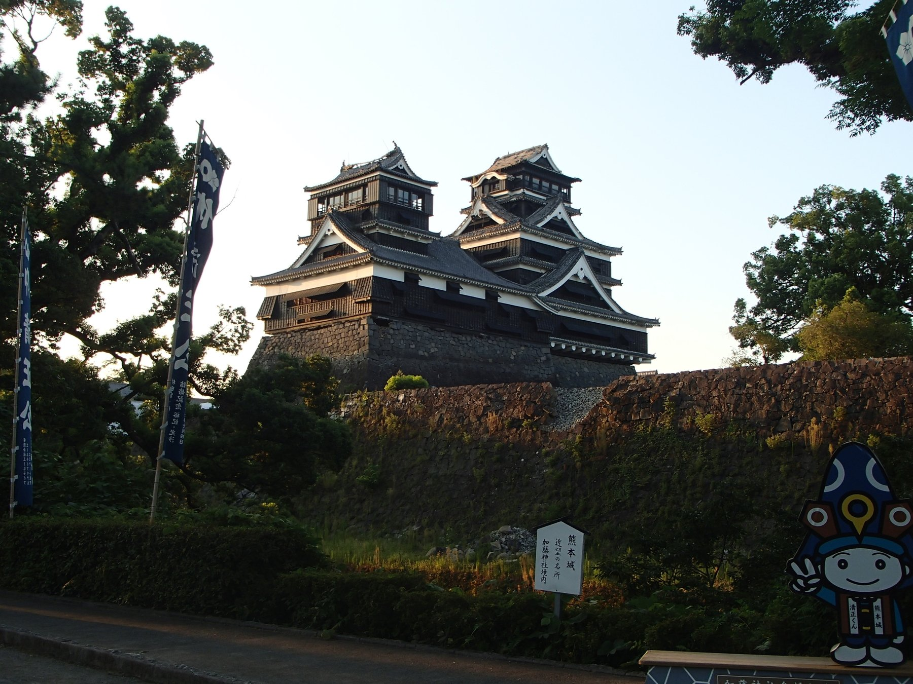
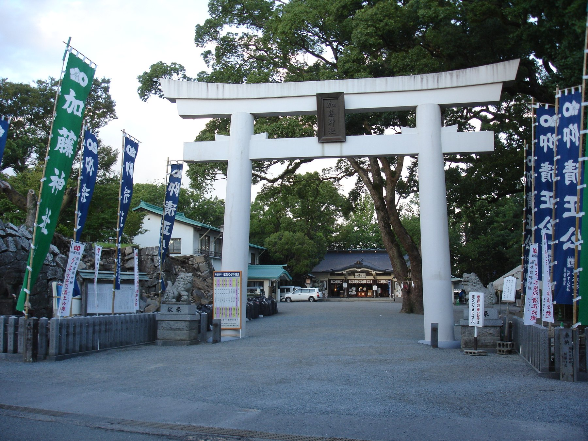
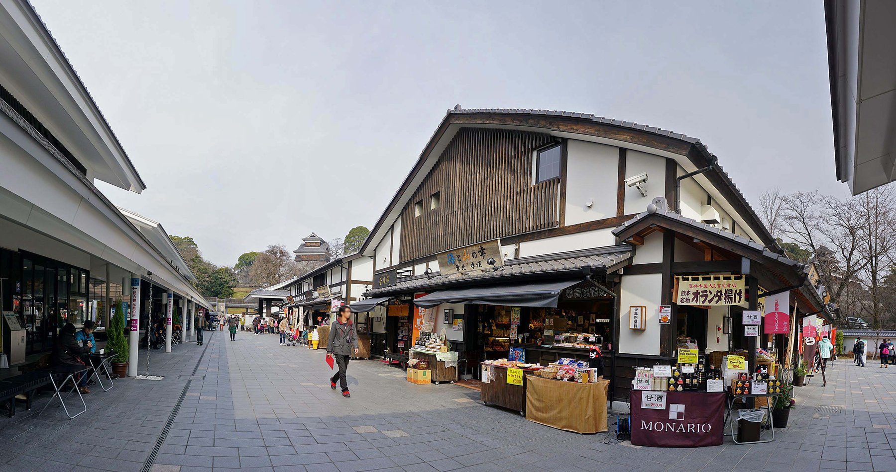
Almost nothing else in this series changes as fast as this castle. The stonework around the twin keeps, the state of the Uto Turret, which stretches of the viewing corridor are open — check again before you go, even if you have read this book before.
The photographs in this book are used under public domain dedications, CC0, Creative Commons Attribution licences, or the standard licence of the stock site Photo AC. Copyright in each photograph remains with its photographer or rights holder.
CC BY 2.0: https://creativecommons.org/licenses/by/2.0/
CC BY 2.5: https://creativecommons.org/licenses/by/2.5/
CC BY 3.0: https://creativecommons.org/licenses/by/3.0/
CC BY 4.0: https://creativecommons.org/licenses/by/4.0/
Admission fees, opening hours and access arrangements are subject to change, and are unusually unsettled following the earthquake of July 2026. Always check the official website before visiting. The information here reflects the time of writing, and no guarantee is made as to its accuracy or completeness.
Japan’s Great Castles, Book One
Where the earlier series in this collection visited only the five castles whose keeps
carry Japan’s National Treasure designation, this series turns to castles across the
country more broadly — National Treasure or not — each one for what makes it
worth the journey on its own terms.